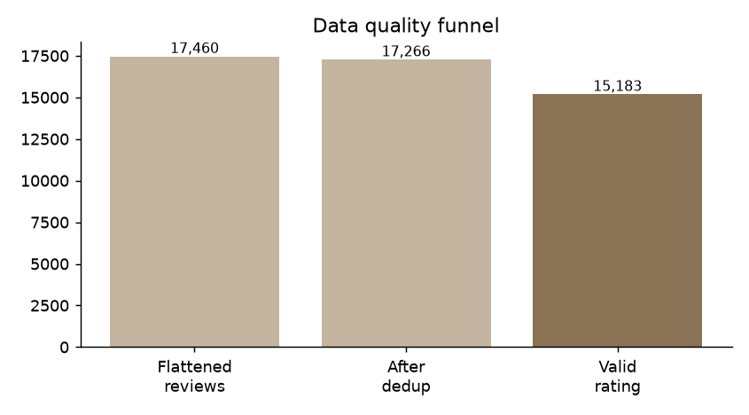
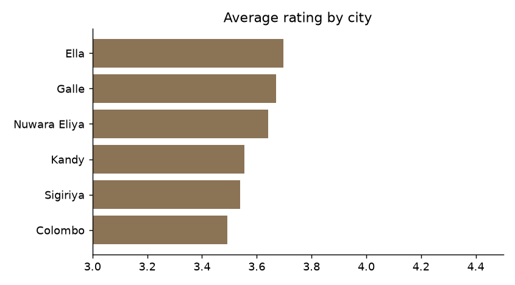
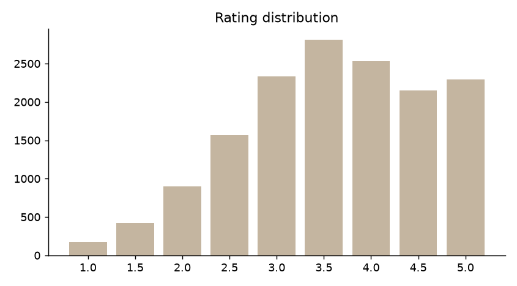
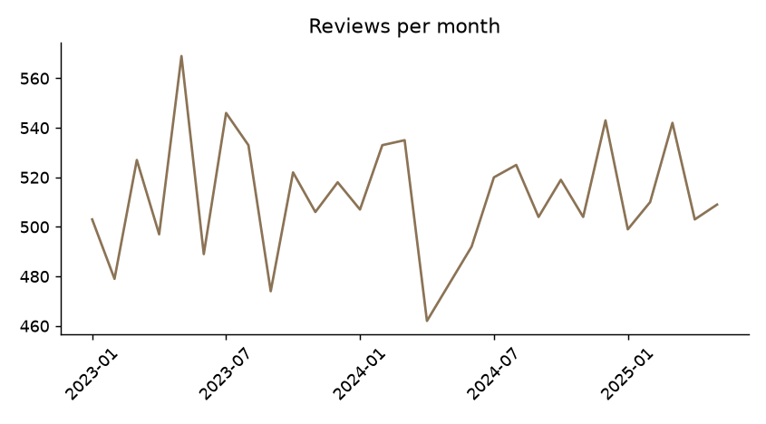
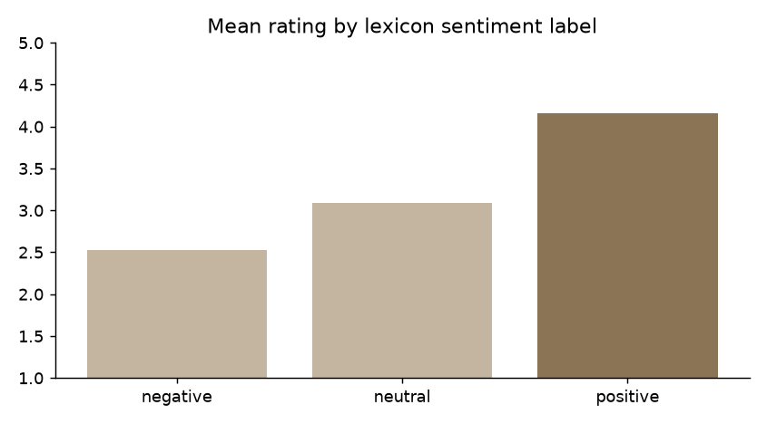

Overview
What you will build
A complete big-data analytics pipeline for hotel reviews: nested JSON arrives, bad lines are quarantined, records are flattened and cleaned, stored as layered Parquet (bronze → silver → gold), enriched with features, summarised, and charted. The same code runs on your laptop or on a multi-node Spark cluster.
Time: about 2.5 hours of lab work · Skills used: Lectures 2–4 (sampling, data quality, semi-structured data, Spark) · Outcomes: LO3, LO4 · Feeds: the semester project.
Project layout
travel-review-pipeline/
├── data/
│ ├── generate_reviews.py seeded generator (messy nested JSON)
│ └── raw/hotels_00..04.jsonl input files
├── pipeline/
│ ├── common.py paths + SparkSession (SPARK_MASTER switch)
│ ├── 01_ingest.py raw → bronze (+ quarantine)
│ ├── 02_clean_flatten.py bronze → silver
│ ├── 03_features.py silver → gold
│ ├── 04_analytics.py gold → CSV summaries
│ └── 05_dashboard.py CSV → PNG charts
├── lake/ (created) bronze / silver / gold / quarantine
├── output/ (created) CSVs, JSON stats, charts
├── docker-compose.yml 1 master + 2 workers
├── run_all.sh run_cluster.sh
└── requirements.txt./run_all.sh. It executes steps 1–6 in about a minute on a laptop. Then read the steps below to understand every stage.Prepare your environment
You need Java, Python and a virtual environment. Spark 3.5 runs on Java 8/11/17/21 and Python 3.8–3.12.
# 1. check Java (17 recommended)
java -version
# 2. create an isolated Python environment (Python 3.10–3.13)
python3 -m venv .venv
source .venv/bin/activate # Windows: .venv\Scripts\activate
# 3. install the tools
pip install -r requirements.txt # pyspark==3.5.3, setuptools, pandas, matplotlibpip install pyspark failed on a system Python with a setuptools error and worked immediately inside a venv. We also hit a Spark 3.5 incompatibility with Python 3.12 and 3.13: DataFrame.toPandas() and pyspark.ml import distutils, which those Python versions removed. Installing setuptools (already listed in requirements.txt) restores it. The pipeline itself writes its small result tables with plain Python csv, so it does not depend on this.python -c "import pyspark; print(pyspark.__version__)" prints 3.5.3.Understand and generate the data
Real scraped data comes with legal and quality questions, so we start from a seeded synthetic dataset of 300 hotels, about 17,800 nested reviews, written as 5 JSON-lines files. The files are already in data/raw/; the generator is included so you can see exactly which problems were injected. Every problem below is something you met in Lectures 3 and 4.
| Injected problem | Example in the data | Lecture concept |
|---|---|---|
| Type drift | "rating": "4.5" (string) next to 4.5 | Schema drift, accuracy |
| Unusable text value | "rating": "N/A" | Validity |
| Out-of-range value | 0, 11, -1 | Accuracy, outliers |
| Explicit null / missing key | null, or no rating key at all | Completeness, MCAR/MAR/MNAR |
| Exact duplicates | same review_id repeated | Uniqueness |
| Mixed date formats | 2024-03-05 vs 05/03/2024 | Consistency |
| Corrupt lines | truncated JSON line | Veracity, fault tolerance |
{"hotel_id": "H-1000", "name": "Royal Inn 0", "location": {"city": "Nuwara Eliya", "lat": 6.9634, "lon": 80.7662}, "stars": 4, "reviews": [{"review_id": "H-1000-R000", "user": "u572", "rating": 5, "text": "Friendly staff, good value, highly recommended, peaceful location.", "date": "2023-08-17", "tags": ["family"], "helpful_votes": 16}, {"review_id": "H-1000-R001", "user": "u903", "rating": 4.0, "text": "Highly recommended, peaceful location, great view.", "date": "2024-03-05", "helpful_votes": 13}, {"review_id": "H-1000-R002", "user": "u1379", "rating": …Look at the structure: one hotel per line, a nested location object, and a reviews array of objects with optional tags and helpful_votes.
data/raw/ with any licensed nested-JSON hotel-review dump and adapt the schema in step 2. Check the site's terms and robots.txt before scraping anything.Ingest: raw JSON to bronze Parquet
Ingestion lands the data as received in a columnar format and separates what cannot be parsed. Three decisions matter:
- Explicit schema, not inference: faster, and it fixes
ratingas a string so type drift cannot crash the job. - PERMISSIVE mode with
columnNameOfCorruptRecord: broken lines are kept in a side column instead of killing the job. - Quarantine: the rejects are written out and counted. Silent data loss is the worst kind.
"""STEP 1 - INGEST: raw JSON lines -> bronze Parquet (+ quarantine for unparseable lines)."""
import json
from pyspark.sql import functions as F
from pyspark.sql.types import *
from common import *
spark = get_spark("01-ingest")
spark.sparkContext.setLogLevel("WARN")
# Explicit schema. rating is read as STRING on purpose: the source mixes 4.5, "4.5", "N/A", null.
review = StructType([
StructField("review_id", StringType()), StructField("user", StringType()),
StructField("rating", StringType()), StructField("text", StringType()),
StructField("date", StringType()), StructField("tags", ArrayType(StringType())),
StructField("helpful_votes", IntegerType())])
schema = StructType([
StructField("hotel_id", StringType()), StructField("name", StringType()),
StructField("location", StructType([StructField("city", StringType()),
StructField("lat", DoubleType()), StructField("lon", DoubleType())])),
StructField("stars", IntegerType()), StructField("reviews", ArrayType(review)),
StructField("_corrupt", StringType())])
raw = (spark.read.schema(schema)
.option("mode", "PERMISSIVE").option("columnNameOfCorruptRecord", "_corrupt")
.json(RAW).cache()) # cache: Spark disallows querying only the corrupt column otherwise
total = raw.count()
bad = raw.filter(F.col("_corrupt").isNotNull())
good = raw.filter(F.col("_corrupt").isNull()).drop("_corrupt")
n_bad = bad.count()
bad.select("_corrupt").write.mode("overwrite").json(QUAR) # keep rejects for inspection
(good.withColumn("_ingested_at", F.current_timestamp())
.withColumn("_source_file", F.input_file_name())
.write.mode("overwrite").parquet(BRONZE))
print(f"lines read={total} good={total-n_bad} quarantined={n_bad}")
json.dump({"lines_read": total, "lines_quarantined": n_bad}, open(f"{OUT}/dq_ingest.json", "w"))import os
from pyspark.sql import SparkSession
ROOT = os.environ.get("PROJECT_ROOT", os.path.abspath(os.path.join(os.path.dirname(__file__), "..")))
RAW = f"{ROOT}/data/raw"
BRONZE = f"{ROOT}/lake/bronze"
SILVER = f"{ROOT}/lake/silver"
GOLD = f"{ROOT}/lake/gold"
QUAR = f"{ROOT}/lake/quarantine"
OUT = f"{ROOT}/output"
def get_spark(app):
"""local[*] by default; set SPARK_MASTER=spark://spark-master:7077 to use the cluster."""
master = os.environ.get("SPARK_MASTER", "local[*]")
return (SparkSession.builder.appName(app).master(master)
.config("spark.sql.shuffle.partitions", os.environ.get("SHUFFLE_PARTITIONS", "8"))
.getOrCreate())
def to_csv(df, path):
"""Write a SMALL Spark DataFrame to one CSV on the driver (no pandas needed inside the cluster image)."""
import csv
rows = df.collect()
with open(path, "w", newline="") as f:
w = csv.writer(f); w.writerow(df.columns); w.writerows([list(r) for r in rows])Run it:
python pipeline/01_ingest.pylines read=300 good=295 quarantined=5
Open lake/quarantine/ and read a rejected line. What does it look like? Your job in the lab is to explain why it failed.
Clean and flatten: bronze to silver
This is Lecture 3's cleaning pipeline translated to Spark, plus Lecture 4's flattening. Keep the row-count discipline: count after every structural change.
"""STEP 2 - CLEAN & FLATTEN: bronze -> silver (one row per review, validated, de-duplicated)."""
import json
from pyspark.sql import functions as F
from common import *
spark = get_spark("02-clean-flatten")
spark.sparkContext.setLogLevel("WARN")
bronze = spark.read.parquet(BRONZE)
# 2a. flatten: explode the reviews array, lift nested fields to columns
flat = (bronze.select("hotel_id", F.col("name").alias("hotel_name"), "stars",
F.col("location.city").alias("city"), F.explode("reviews").alias("r"))
.select("hotel_id", "hotel_name", "stars", "city", "r.*"))
n_flat = flat.count()
# 2b. de-duplicate on the business key (exact duplicates were injected in the source)
dedup = flat.dropDuplicates(["review_id"])
n_dedup = dedup.count()
# 2c. type repair + validation
rating = F.col("rating").cast("double") # "N/A" -> null, "4.5" -> 4.5
d1 = F.to_date("date", "yyyy-MM-dd"); d2 = F.to_date("date", "dd/MM/yyyy")
silver = (dedup
.withColumn("rating_raw", F.col("rating"))
.withColumn("rating", F.when(rating.between(1, 5), rating)) # out-of-range -> null
.withColumn("review_date", F.coalesce(d1, d2)) # two date formats
.withColumn("text", F.trim(F.col("text")))
.withColumn("has_tags", F.col("tags").isNotNull())
.drop("date"))
silver.write.mode("overwrite").partitionBy("city").parquet(SILVER)
s = spark.read.parquet(SILVER)
stats = {"reviews_flattened": n_flat, "after_dedup": n_dedup,
"rating_missing_or_invalid": s.filter(F.col("rating").isNull()).count(),
"date_unparsed": s.filter(F.col("review_date").isNull()).count(),
"silver_rows": s.count()}
print(json.dumps(stats, indent=2))
json.dump(stats, open(f"{OUT}/dq_clean.json", "w"))| Operation | Spark | Why |
|---|---|---|
| Flatten | explode("reviews"), r.* | One row per review |
| De-duplicate | dropDuplicates(["review_id"]) | Business key, not whole row |
| Repair type | cast("double") | "N/A" becomes null, "4.5" becomes 4.5 |
| Validate range | F.when(rating.between(1,5), rating) | 0, 11, -1 become null |
| Two date formats | coalesce(to_date(.., "yyyy-MM-dd"), to_date(.., "dd/MM/yyyy")) | Try each format in turn |
| Partitioned write | partitionBy("city") | Queries filtering by city skip other folders |
python pipeline/02_clean_flatten.py{
"reviews_flattened": 17460,
"after_dedup": 17266,
"rating_missing_or_invalid": 2083,
"date_unparsed": 0,
"silver_rows": 17266
}
Features: silver to gold
Gold tables are ready for analysis. We add review-level features (word count, date parts, a simple lexicon sentiment score and label) and two aggregates: per-hotel statistics and city-by-month volumes.
pipeline/03_features.py"""STEP 3 - FEATURES: silver -> gold (review-level features + hotel and city-month aggregates)."""
from pyspark.sql import functions as F
from common import *
POS = ["great", "friendly", "clean", "excellent", "peaceful", "comfortable", "amazing", "lovely", "good", "recommended"]
NEG = ["noisy", "dirty", "rude", "slow", "overpriced", "uncomfortable", "poor", "cold", "disappointing", "not"]
spark = get_spark("03-features")
spark.sparkContext.setLogLevel("WARN")
s = spark.read.parquet(SILVER)
words = F.split(F.regexp_replace(F.lower("text"), r"[^a-z\s]", ""), r"\s+")
f = (s.withColumn("words", words)
.withColumn("n_words", F.size("words"))
.withColumn("pos_hits", F.size(F.filter("words", lambda w: w.isin(POS))))
.withColumn("neg_hits", F.size(F.filter("words", lambda w: w.isin(NEG))))
.withColumn("sentiment", (F.col("pos_hits") - F.col("neg_hits")) / F.greatest(F.col("n_words"), F.lit(1)))
.withColumn("label", F.when(F.col("sentiment") > 0, "positive").when(F.col("sentiment") < 0, "negative").otherwise("neutral"))
.withColumn("year", F.year("review_date")).withColumn("month", F.date_format("review_date", "yyyy-MM"))
.withColumn("weekday", F.date_format("review_date", "E"))
.drop("words"))
f.write.mode("overwrite").parquet(f"{GOLD}/reviews")
rated = f.filter(F.col("rating").isNotNull())
hotel = (rated.groupBy("hotel_id", "hotel_name", "city", "stars")
.agg(F.count("*").alias("n_reviews"), F.round(F.avg("rating"), 3).alias("avg_rating"),
F.round(F.avg("sentiment"), 4).alias("avg_sentiment"),
F.round(F.avg((F.col("label") == "positive").cast("int")), 3).alias("pct_positive"),
F.max("review_date").alias("last_review")))
hotel.write.mode("overwrite").parquet(f"{GOLD}/hotel_stats")
citym = (rated.groupBy("city", "month").agg(F.count("*").alias("n_reviews"), F.round(F.avg("rating"), 3).alias("avg_rating")))
citym.write.mode("overwrite").parquet(f"{GOLD}/city_month")
print("gold tables written:", f.count(), "review rows;", hotel.count(), "hotels;", citym.count(), "city-months")F.filter(words, lambda w: w.isin(POS)) runs a lambda inside the JVM as a higher-order SQL function, so it avoids slow Python UDFs. The lexicon is deliberately tiny. Lecture 9 replaces it with proper text analytics.
python pipeline/03_features.pygold tables written: 17266 review rows; 295 hotels; 180 city-months
Analytics: descriptive statistics
This step produces small result tables (CSV) from the large gold data: distribution, quantiles, group summaries, correlation. The heavy lifting stays in Spark; only tiny results come back to the driver, and approxQuantile avoids a full sort.
"""STEP 4 - ANALYTICS: descriptive statistics from gold -> small CSVs for the dashboard step."""
import json
from pyspark.sql import functions as F
from common import *
spark = get_spark("04-analytics")
spark.sparkContext.setLogLevel("WARN")
r = spark.read.parquet(f"{GOLD}/reviews").filter(F.col("rating").isNotNull())
h = spark.read.parquet(f"{GOLD}/hotel_stats")
cm = spark.read.parquet(f"{GOLD}/city_month")
q1, med, q3 = r.approxQuantile("rating", [.25, .5, .75], 0.01)
summary = {"n_rated_reviews": r.count(), "mean_rating": round(r.agg(F.avg("rating")).first()[0], 3),
"q1": q1, "median": med, "q3": q3,
"corr_rating_sentiment": round(r.stat.corr("rating", "sentiment"), 3)}
print(json.dumps(summary, indent=2)); json.dump(summary, open(f"{OUT}/summary.json", "w"))
to_csv(r.groupBy("city").agg(F.count("*").alias("n"), F.round(F.avg("rating"), 3).alias("avg_rating"),
F.round(F.avg("sentiment"), 4).alias("avg_sentiment")).orderBy("city"), f"{OUT}/city_summary.csv")
to_csv(r.groupBy("rating").count().orderBy("rating"), f"{OUT}/rating_dist.csv")
to_csv(r.groupBy("label").agg(F.round(F.avg("rating"), 3).alias("avg_rating"), F.count("*").alias("n")), f"{OUT}/sentiment_vs_rating.csv")
to_csv(cm.groupBy("month").agg(F.sum("n_reviews").alias("n_reviews")).orderBy("month"), f"{OUT}/monthly_volume.csv")
to_csv(h.filter(F.col("n_reviews") >= 30).orderBy(F.desc("avg_rating")).limit(10), f"{OUT}/top_hotels.csv")
print("CSV outputs written to", OUT)python pipeline/04_analytics.py{
"n_rated_reviews": 15183,
"mean_rating": 3.598,
"q1": 3.0,
"median": 3.5,
"q3": 4.5,
"corr_rating_sentiment": 0.863
}Visualise the results
Charts are drawn on your machine with matplotlib from the small CSV files. This is the serving end of the pipeline: everything upstream exists so that these pictures can be trusted.
pipeline/05_dashboard.py"""STEP 5 - SERVE/VISUALISE: CSV outputs -> PNG charts (runs on the host; needs pandas + matplotlib)."""
import json, os
import pandas as pd, matplotlib
matplotlib.use("Agg"); import matplotlib.pyplot as plt
OUT = os.path.join(os.path.dirname(__file__), "..", "output"); C = "#8b7355"; G = "#c4b5a0"
def save(name): plt.tight_layout(); plt.savefig(f"{OUT}/{name}", dpi=130); plt.close()
dq = {**json.load(open(f"{OUT}/dq_ingest.json")), **json.load(open(f"{OUT}/dq_clean.json"))}
steps = [("Flattened\nreviews", dq["reviews_flattened"]), ("After\ndedup", dq["after_dedup"]),
("Valid\nrating", dq["after_dedup"] - dq["rating_missing_or_invalid"])]
fig, ax = plt.subplots(figsize=(6.5, 3.6)); ax.bar([s[0] for s in steps], [s[1] for s in steps], color=[G, G, C])
for i, s in enumerate(steps): ax.text(i, s[1], f"{s[1]:,}", ha="center", va="bottom", fontsize=9)
ax.set_title("Data quality funnel"); ax.spines[["top", "right"]].set_visible(False); save("chart_dq_funnel.png")
c = pd.read_csv(f"{OUT}/city_summary.csv").sort_values("avg_rating")
fig, ax = plt.subplots(figsize=(6.5, 3.6)); ax.barh(c.city, c.avg_rating, color=C)
ax.set_xlim(3, 4.5); ax.set_title("Average rating by city"); ax.spines[["top", "right"]].set_visible(False); save("chart_city_rating.png")
m = pd.read_csv(f"{OUT}/monthly_volume.csv").iloc[:-1] # drop the partial final month
fig, ax = plt.subplots(figsize=(6.5, 3.6)); ax.plot(m.month, m.n_reviews, color=C)
ax.set_xticks(m.month[::6]); ax.tick_params(axis="x", rotation=45); ax.set_title("Reviews per month")
ax.spines[["top", "right"]].set_visible(False); save("chart_monthly_volume.png")
d = pd.read_csv(f"{OUT}/rating_dist.csv")
fig, ax = plt.subplots(figsize=(6.5, 3.6)); ax.bar(d.rating.astype(str), d["count"], color=G)
ax.set_title("Rating distribution"); ax.spines[["top", "right"]].set_visible(False); save("chart_rating_dist.png")
s = pd.read_csv(f"{OUT}/sentiment_vs_rating.csv").set_index("label").reindex(["negative", "neutral", "positive"])
fig, ax = plt.subplots(figsize=(6.5, 3.6)); ax.bar(s.index, s.avg_rating, color=[G, G, C])
ax.set_title("Mean rating by lexicon sentiment label"); ax.set_ylim(1, 5); ax.spines[["top", "right"]].set_visible(False); save("chart_sentiment.png")
print("charts written")python pipeline/05_dashboard.py # or run everything: ./run_all.sh



Scale out: a multi-node Spark cluster
Until now Spark ran in local[*] mode: one JVM using all your cores. Same code, different master. A Standalone cluster adds real roles: a master, workers, executors. This is the multi-node setting of learning outcome LO4.
# Multi-node Spark Standalone cluster: 1 master + 2 workers on one machine (Docker Desktop / Docker Engine).
# NOTE: written from the official apache/spark image conventions; not run in the authoring sandbox -
# verify the image tag exists for your platform (docker pull) before the lab.
x-spark: &spark
image: apache/spark:3.5.3-scala2.12-java17-python3-ubuntu
user: root
environment:
- PROJECT_ROOT=/opt/project
- SPARK_MASTER=spark://spark-master:7077
- PYTHONUNBUFFERED=1
volumes:
- .:/opt/project
services:
spark-master:
<<: *spark
container_name: spark-master
command: /opt/spark/bin/spark-class org.apache.spark.deploy.master.Master --host spark-master
ports: ["8080:8080", "7077:7077"] # 8080 = master web UI
spark-worker-1:
<<: *spark
container_name: spark-worker-1
command: /opt/spark/bin/spark-class org.apache.spark.deploy.worker.Worker spark://spark-master:7077 --cores 2 --memory 2g
depends_on: [spark-master]
spark-worker-2:
<<: *spark
container_name: spark-worker-2
command: /opt/spark/bin/spark-class org.apache.spark.deploy.worker.Worker spark://spark-master:7077 --cores 2 --memory 2g
depends_on: [spark-master]Start the cluster and run the pipeline on it:
docker compose up -d
# open http://localhost:8080 → you should see 2 workers, 4 cores in total
./run_cluster.sh # spark-submit steps 01–04 against spark://spark-master:7077The scripts choose their master from the SPARK_MASTER environment variable (see common.py), so nothing in the pipeline code changes.
apache/spark image conventions but was not run in that environment. Do a dry run (and confirm the image tag pulls on your platform) before class. A smaller data set also means the cluster may be slower than local mode, which is itself a good discussion point (shuffle and scheduling overhead).Things to observe in the Spark UI (http://localhost:8080 and the application UI on port 4040)
- How many partitions did the read stage create? Compare with the number of input files.
- Which stage has a shuffle? (Hint:
dropDuplicates,groupBy.) - Kill one worker (
docker stop spark-worker-2) mid-job. Does the job finish? Why?
Verify your result
If you use the provided data/raw/ files, your numbers should match these. A mismatch usually means a step was skipped or a path is wrong.
| Checkpoint | Expected |
|---|---|
| Lines read / quarantined (step 2) | 300 / 5 |
| Reviews after flatten | 17,460 |
| After de-duplication | 17,266 |
| Missing or invalid rating | 2,083 (rated reviews: 15,183) |
| Unparsed dates | 0 |
| Mean / median rating | 3.598 / 3.5 |
| Quartiles (Q1, Q3) | 3.0, 4.5 |
| Corr(rating, sentiment) | 0.863 |
Troubleshooting
| Symptom | Likely cause and fix |
|---|---|
JAVA_HOME is not set / Java gateway exited | Install JDK 17 and restart the terminal |
ModuleNotFoundError: distutils | Python 3.12 or 3.13 with Spark 3.5: pip install setuptools |
Path does not exist (lake/bronze) | Run the steps in order; each reads the previous layer |
| Cannot query only the corrupt record column | Cache the DataFrame first (already done in 01_ingest.py) |
| Cluster job hangs at "Initial job has not accepted any resources" | Workers not registered, or asking for more memory/cores than they offer |
Extend it (project milestones)
- Quality gates: fail the job if the quarantine rate exceeds 2%, or the duplicate rate jumps.
- Better text analytics: replace the lexicon with
Tokenizer → StopWordsRemover → HashingTF → IDF(Lecture 9). - Prediction: predict a rating from text and hotel features with Spark ML, fitting only on the training split (Lecture 6).
- Streaming: replace file ingestion with Spark Structured Streaming reading a folder or Kafka topic.
- Orchestration: schedule the five scripts as a DAG with Airflow or a simple cron job.
- Real data: swap in a licensed dataset and compare your quality funnel with the synthetic one.